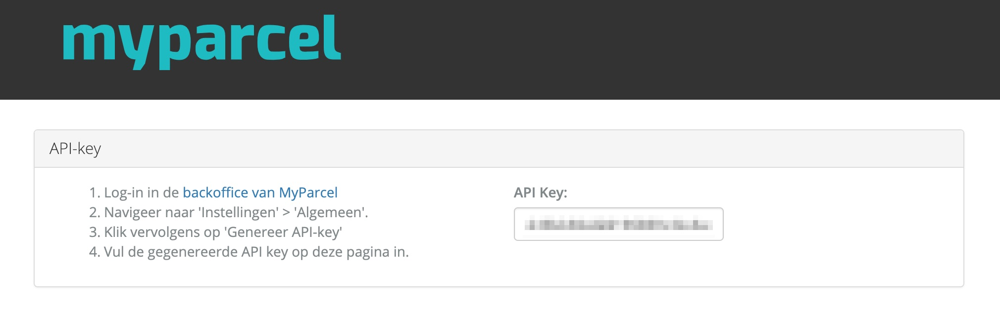
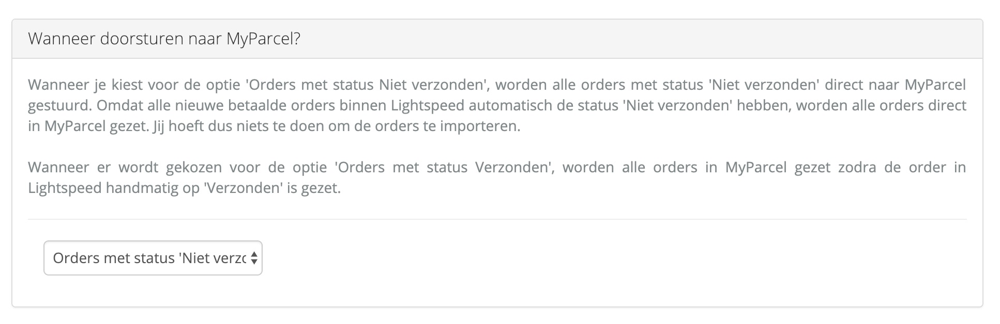
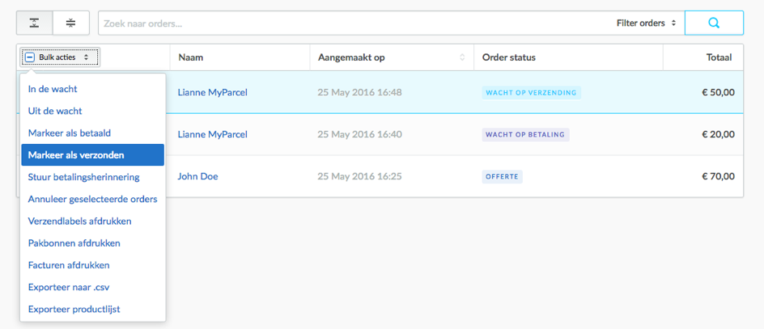
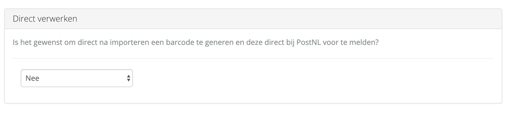
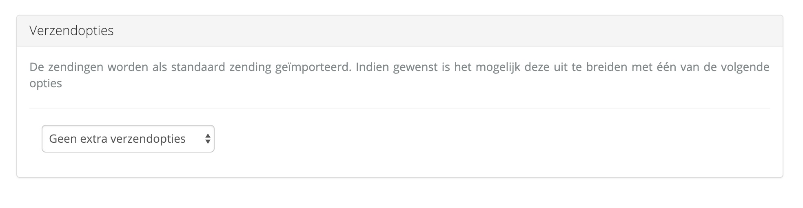
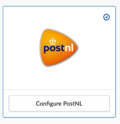
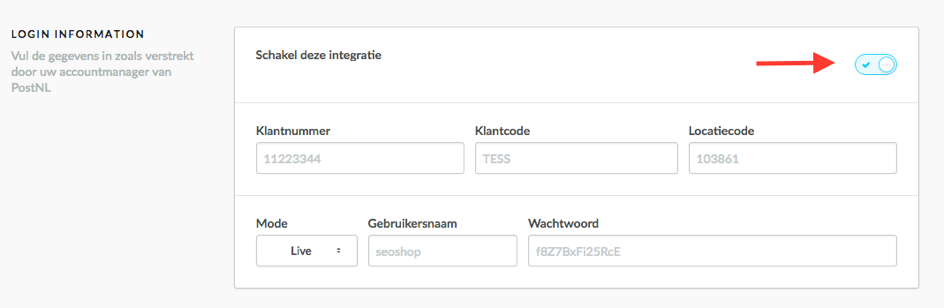
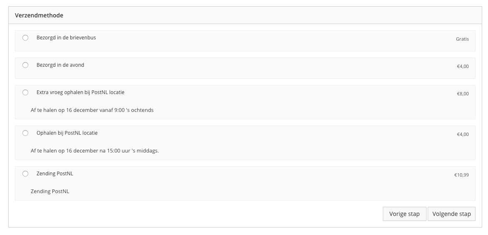

Inleiding
In deze handleiding laten wij zien hoe de MyParcel app geinstalleerd en ingesteld kan worden in jouw Lightspeed omgeving. De plugin wordt kosteloos aangeboden door MyParcel. Wij helpen jou graag met eventuele vragen over de werking van de app.Alle functies van de app zijn getest in een standaard Lightspeed omgeving.
De in de vensters getoonde prijzen zijn slechts als voorbeeld ingesteld en wijken mogelijk af van werkelijke tarieven. Voor de juiste prijzen kun jij de tarieven in jouw account raadplegen.
Inhoud
1 Installatie
1.1 Via de App Store van Ligthspeed
In deze handleiding wordt uitgelegd hoe je de Lightspeed koppeling met MyParcel kunt installeren en hoe deze koppeling werkt. In de App Store van Lightspeed kun je de MyParcel app vinden. Er zijn twee apps aanwezig (MyParcel & MyParcel BE), maar voor MyParcel NL dient de MyParcel gebruikt te worden.Je kunt hier kiezen voor Installeer app. De app wordt kosteloos door MyParcel aangeboden. Om gebruik te kunnen maken van de app dien je klant te zijn bij MyParcel. Ben je nog geen klant? Regstreer vrijblijvend een account op deze pagina.
1.2 Configuratie MyParcel app
Na een succesvolle installatie volgt de configuratiepagina:
- Bij API Key dient de API key te worden ingevuld. Deze is te vinden op deze pagina in de backoffice van MyParcel.
- Vervolgens dien je aan te geven wanneer een nieuwe order naar MyParcel wordt gestuurd.

Orders met status Niet verzonden (aanbevolen)
Bij deze keuze worden alle orders met status Niet verzonden direct naar MyParcel gestuurd. Omdat alle nieuwe orders binnen Lightspeed automatisch de status Niet verzonden hebben, worden al jouw orders vrijwel direct in Myparcel gezet.
Orders met status Verzonden
Bij deze keuze worden alle orders in MyParcel gezet zodra de order in Lightspeed handmatig op Verzonden wordt zet. Dit doe je door de order aan te vinken en rechtsboven voor Markeer als verzonden te kiezen.  Na deze actie komen de aangevinkte orders vrijwel direct in jouw MyParcel omgeving. Het kan zijn dat orders dubbel in MyParcel komen te staan indien je orders, nadat ze de status Verzonden hebben, een andere status geeft en vervolgens opnieuw op Verzonden zet.
-
Vervolgens kan er aangeven worden of de geïmporteerde orders direct verwerken worden, of dat dit handmatig moet gebeuren.

Direct verwerken
Deze optie zorgt ervoor dat de geïmporteerde orders ook direct worden verwerkt. De zending wordt voorgemeld en voorzien van een barcode. Let op: Nadat de order is geimporteerd is er geen mogelijkheid om aanvullende verzendopties te kiezen of pakkettypen te wijzigen.
Niet direct verwerken (aanbevolen)
Het spreekt voor zich dat bij deze optie de geïmporteerde orders in MyParcel niet direct worden verwerkt. Deze optie geeft jou meer flexibiliteit. Mochten er wijzigingen zijn qua verzendopties, bezorgopties of pakkettypen? Deze zijn later altijd nog toe te voegen of te wijzigen. - Wil je een bepaalde verzendoptie meegeven aan de order, dan is dat hier op te geven. 
-
In het laatste onderdeel kunnen verschillende bezorgopties worden ingesteld die vervolgens worden getoond in de checkout van jouw webshop. MyParcel houdt rekening met jouw laatste bestelmoment en op welke dagen jij de pakketten inlevert bij PostNL. Bied je graag een avondlevering, ochtendlevering, maandaglevering of één van de andere opties? Vink jouw gewenste optie aan, geef jouw eigen titel mee en bepaal een totaalbedrag voor de verzendkosten.
Ben je klaar met het instellen van alle opties? Klik onderaan op Voltooien om de configuratie op te slaan en af te sluiten.
Wanneer we bovenstaande afbeelding als voorbeeld nemen dan komt dit in de checkout als volgt uit te zien.
De bovenste twee verzendmethoden (Bezorgd thuis of op het werk & Ophalen bij PostNL locatie) komen niet vanuit deze configuratie, maar worden seperaat ingesteld in Lightspeed bij de PostNL module. Zie in paragraaf 1.3 welke stappen er doorlopen moeten worden om ook dit in te stellen.
1.3 Configuratie Ophalen bij een PostNL locatie
Naast bovenstaande configuratie is het ook mogelijk om jouw klanten de mogelijkheid te geven om te kiezen voor een PostNL ophaallocatie. Oorspronkelijk hoort deze functionaliteit bij de PostNL integratie, maar de koppeling van MyParcel heeft ervoor gezorgd dat deze functionaliteit word ondersteund!-
PostNL integratie inschakelen

Ga in Lightspeed naar Algemeen → Instellingen → Verzendmethoden. Hier kun je de PostNL verzendmethode configureren.
Bij de Login Information is de integratie in te schakelen. Overige velden zoals klantnummer, klantcode, locatiecode, gebruikersnaam en wachtwoord dienen niet ingevuld te worden. Zet vervolgens de Mode op Live.
 -
Verzendmethoden instellen voor afhaallocaties
Kies hier voor de optie Ophalen op een postkantoor als je jouw klanten de gelegenheid wil geven het pakket te laten bezorgen op een postkantoor of servicepunt.
-
Verzendmethoden in de checkout
Nadat je de wijzigingen hebt doorgevoerd en opgeslagen zie je in het bestelproces van jouw webwinkel de volgende verzendmethoden:
 -
Verzendmethoden instellen
Kies hier voor de optie Ophalen bij een PostNL locatie als je jouw klanten de gelegenheid wil geven het pakket te laten bezorgen op een postkantoor of servicepunt.
-
Prijzen instellen
Als laatste is het noodzakelijk om de prijzen in te stellen voor deze optie. Klik onderaan de pagina op Voeg prijzen toe en kies de optie PostNL - PakjeGemak.
Hier dient de verzendmethode middels het vinkje te worden toegestaan, kan er eventueel aangegeven worden wanneer deze optie gratis is, dienen er verzendkosten te worden opgegeven en moet Nederland aangevinkt worden als land.